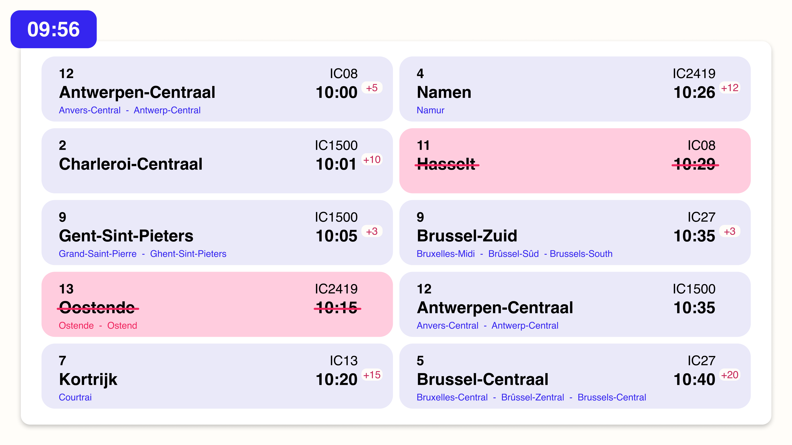
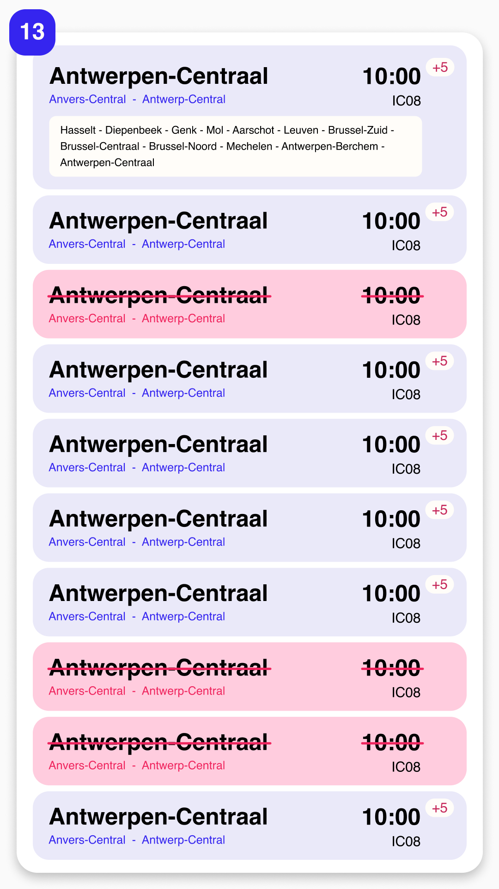

In de les van deze week kregen we uitleg over de basis van HTML en CSS. We kregen de opdracht om afbeeldingen toe te voegen en opmaak toe te passen met CSS.
Deze week heb ik niet veel meer kunnen doen, omdat ik eigenlijk al klaar was met alles wat er gevraagd werd. Het enige wat nog moest gebeuren, was het toevoegen van foto’s aan mijn HTML-pagina’s. Dat was dus snel in orde.
Verder heb ik deze week nog wat gewerkt aan mijn Figma-design. De afgelopen weken had ik vooral gefocust op de basisstructuur, maar ik had nog geen oplossing uitgewerkt voor wanneer een trein geschrapt is. Dat heb ik deze week toegevoegd, zodat het ontwerp ook dat scenario duidelijk weergeeft.
Omdat het stationsscherm het eerste scherm is dat reizigers zien, ben ik daar begonnen met het uitwerken van een optie voor een geschrapte trein. Ik heb nagedacht over wat de duidelijkste manier zou zijn om dit weer te geven zodat iedereen het begrijpt. Eerst gebruikte ik de tekst "Rijdt niet", maar dat zou in meerdere talen moeten worden vertaald, wat het ontwerp te druk zou maken door de beperkte ruimte.
Daarom kwam ik op het idee om een rode streep door de eindbestemming te trekken. Dat is een universeel symbool dat in elke taal begrijpbaar is. Om het nog duidelijker te maken, heb ik ook een streep door het tijdstip gezet en de achtergrond een rood-roze tint gegeven, zodat direct zichtbaar is dat deze trein niet rijdt.
Voor dit scherm heb ik vrij eenvoudig de aanpak gevolgd die ik bij het stationscherm had gebruikt.
